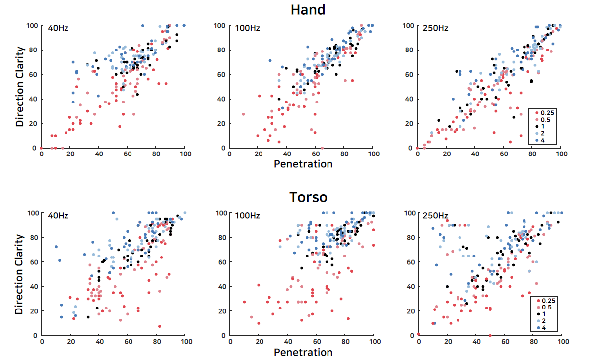

PHANTOM SENSATION
for immersive virtual experiences
Body-Penetrating Tactile Phantom Sensations
ACM conference on Human Factors in Computing Systems (CHI'20)
ABSTRACT
In tactile interaction, a phantom sensation refers to an illusion felt on the skin between two distant points at which vibrations are applied. It can improve the perceptual spatial resolution of tactile stimulation with a few tactors. All phantom sensations reported in the literature act on the skin or out of the body, but no such reports exist for those eliciting sensations penetrating the body. This paper addresses tactile phantom sensations in which two vibration actuators on the dorsal and palmar sides of the hand present an illusion of vibration passing through the hand. We also demonstrate similar tactile illusions for the torso. For optimal design, we conducted user studies while varying vibration frequency, envelope function, stimulus duration, and penetrating direction. Based on the results, we present design guidelines on penetrating phantom sensations for its use in immersive virtual reality applications.
FULL CITATION
Jinsoo Kim, Seungjae Oh, Chaeyong Park, and Seungmoon Choi. 2020. Body-Penetrating Tactile Phantom Sensations. In Proceedings of the 2020 CHI Conference on Human Factors in Computing Systems (CHI '20). ACM, New York, 1–13. DOI:https://doi.org/10.1145/3313831.3376619
FIGURES
(Teaser image) Concept of a tactile sensation passing through the body (torso). Two actuators present vibrations with the amplitude profiles shown in the two right plots. The amplitude on the entering side is initially the greatest and then gradually decreases. The amplitude profile on the leaving side has the opposite shape.
Modulation of vibration amplitudes for different degrees gamma of polynomial.
Examples where penetrating sensations can improve experience and usability in VR. The contact with the hand of a remote user in social interaction (Left). A user’s hand penetrating a virtual surface (Middle). A user passing through a virtual wall or moving beyond a tracking area (Right).

Scatter plot for DIRECTION CLARITY vs. PENETRATION and for each Body (rows) and Frequency (columns). In each plot, Gamma is encoded with color: 0.25 (red), 0.5 (light red), 1 (black), 2 (light blue), and 4 (blue).